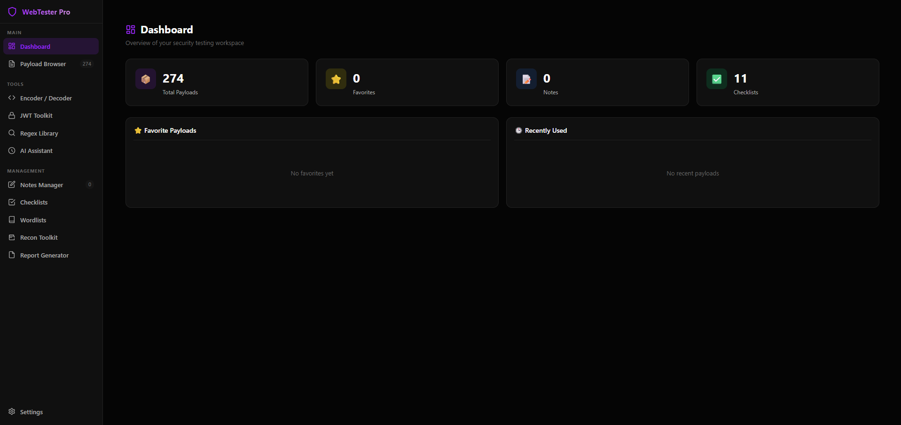
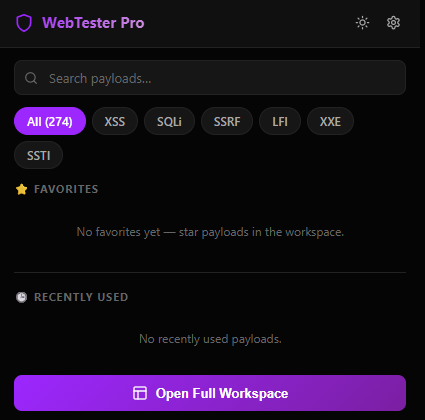
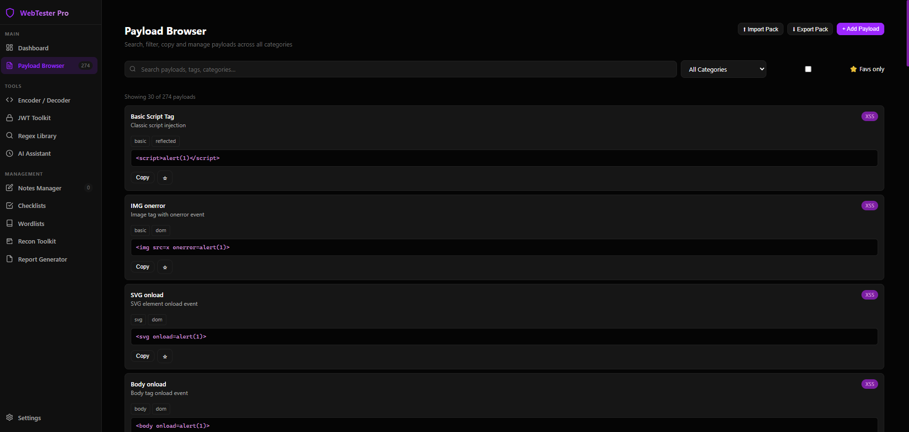
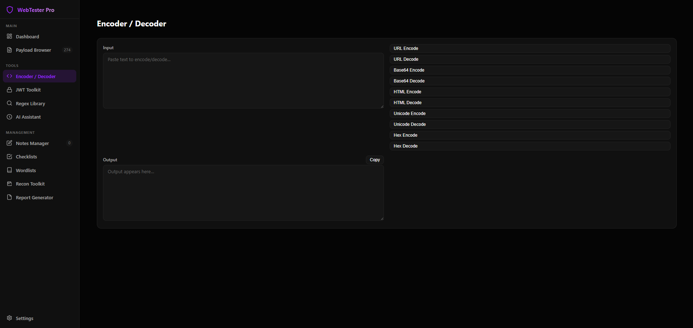
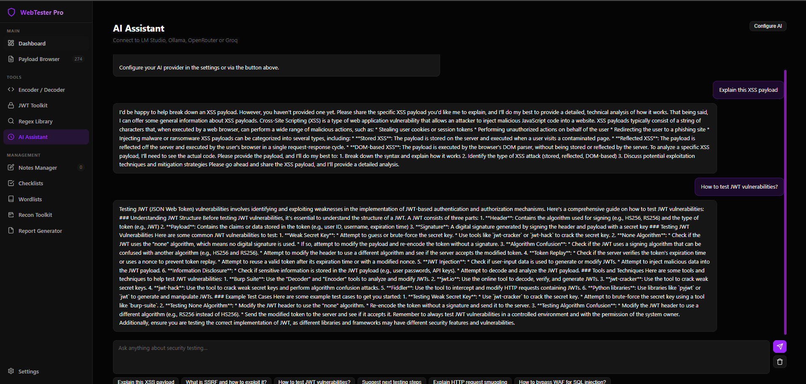
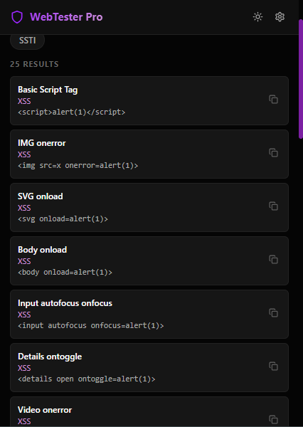
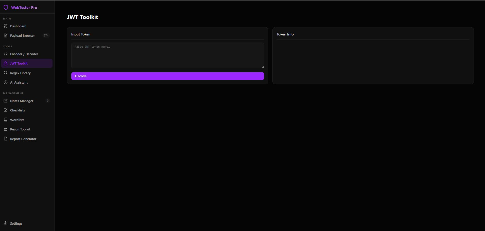
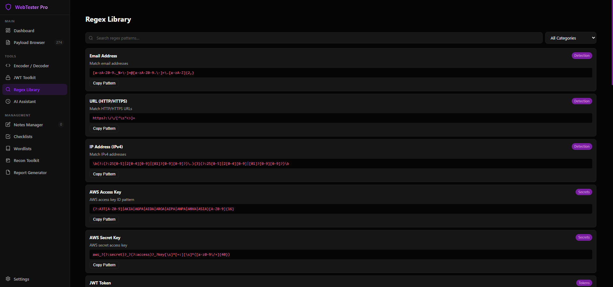
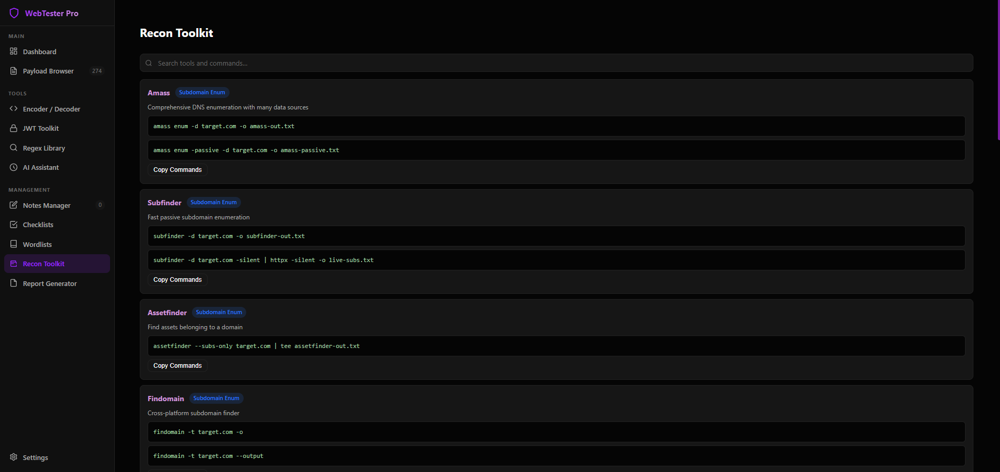

Payload Browser
Search, filter, copy, favorite, import, and export payloads across common web vulnerability categories.
A cross-browser security testing extension for authorized bug bounty research, web application testing, payload management, JWT review, recon notes, and report preparation.

WebTester Pro keeps common testing utilities close to the browser without sending telemetry or requiring an external service.
Search, filter, copy, favorite, import, and export payloads across common web vulnerability categories.
URL, Base64, HTML, Unicode, and Hex encode/decode tools for quick request and payload preparation.
Decode JWT headers and payloads, inspect claims, and review common token implementation risks.
Ready-to-copy patterns for secrets, tokens, URLs, cloud keys, and other useful detection tasks.
Optional user-configured AI provider support for explanations, next steps, and report drafting.
Command references, testing checklists, notes, wordlists, and report templates in one workspace.
Screenshots from the popup and full workspace show the tools users get after installing WebTester Pro.




JWT review, regex lookup, recon commands, settings, and the popup payload list are included in the same extension.




Firefox users can use Mozilla Add-ons. Chromium-based browsers can load the Chrome package manually.
Install from the official listing when available.
Download `WebTesterPro-Chrome.zip`, extract it, enable Developer Mode, and choose Load unpacked.
Build packages locally with `python scripts/build_release.py` from the repository root.
WebTester Pro declares no data collection and stores extension data locally in browser storage.
AI features run only after the user manually configures an external provider.
Use this extension only on systems you own or where you have explicit written permission to test.
Follow the developer, share feedback, and support continued work on WebTester Pro.
Developer of WebTester Pro. Connect on LinkedIn for updates, security projects, and future releases.
If WebTester Pro helps your workflow, you can support development with a small thanks.

Firefox, Chrome, Edge, Brave, and source packages are available from the project links.